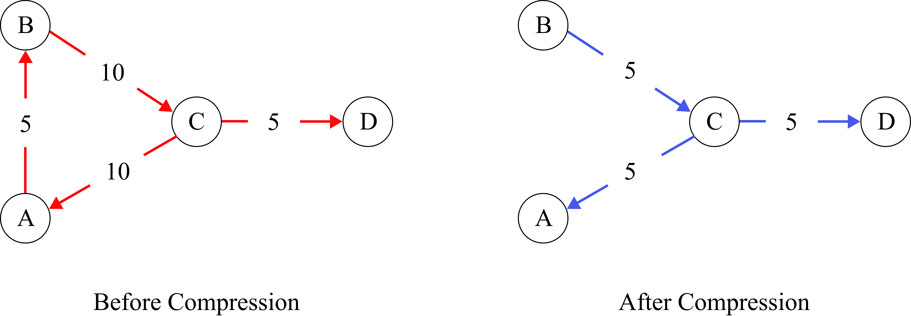
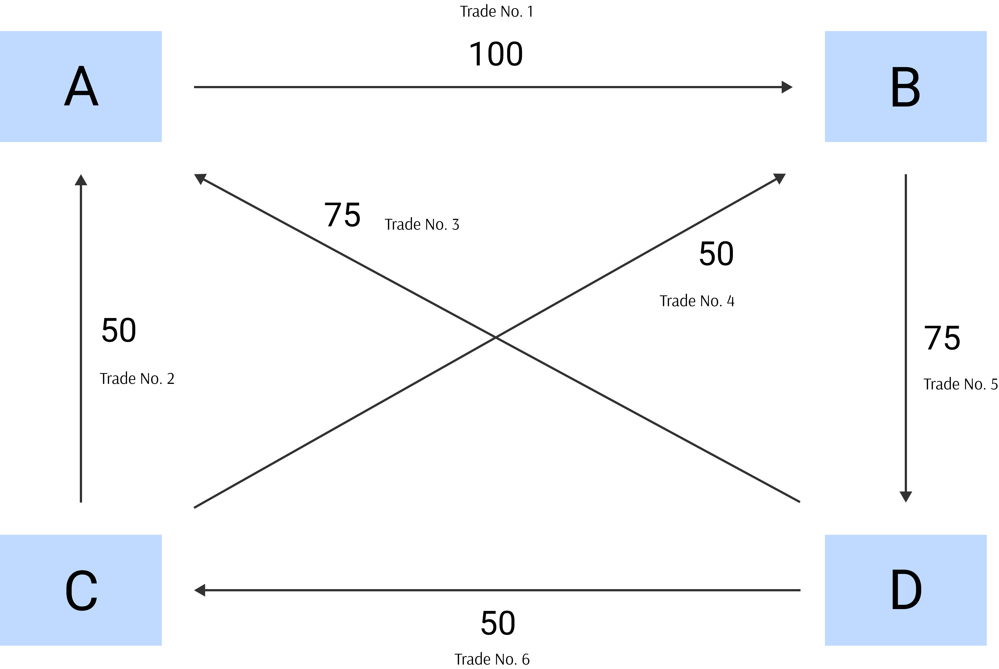

Portfolio Compression
Trading firms build-up economically redundant trades over a period of time. Portfolio Compression (Trade Compression or Portfolio Trade Compression or Tear-up) is a technique to remove such redundant or non-economic trades from the portfolio of firms. It aims at reducing the gross notional exposures, while keeping the net exposures the same. In other words, trade compression looks to eliminate chains of trades in a network. The below diagram shows the effect of trades before and after compression.
Ideally, compression would eliminate all such cycles of trades from the network. In practice, all cycles may not be eliminated, as it requires parties to volutarily participate and agree to compress trades. The general market practice is that firms take the help of third parties that offer compression as a service and remove only certain trades from their portfolios. While submitting the trades for compression, firms provide their constraints and tolerences.

Portfolio compression can be carried out bilaterally or multilaterally. The best results can be obtained when it is conducted multilaterally. The following examples show both the methods.
Bilateral Compression
Let's suppose
Party A bought 100 shares of Microsoft from Party B @ USD 50 for settlement T+1 year.
Party A sold 50 shares of Microsoft to Party B @ USD 55 for settlement T+1 year.
The market exposure to both the parties is 50 units of Microsoft shares.
The above trades can be compressed into a single trade in any of the following two ways.
- Cancel the original two trades and create a new trade at a new price - For example, the new trade is Party A buys 50 shares of Microsoft from Party B @ USD 45 per share; or
- Cancel the original two trades and create a new trade at the original price and settle the realised profit now - For example, the new trade is Party A buys 50 shares of Microsoft from Party B @ USD 50 per share and the realised profit of USD 250 can be settled now by discounting it at the appropriate discounting rate.
In the above example, we achieved a 50% compression in trades (from 2 trades to 1 trade), and a 33% compression in notional value (from total gross notional of 150 to notional of 50).
Multilateral Compression
Let's consider the following trades in Microsoft shares by four parties:
- Party A sold 100 shares to Party B
- Party A bought 50 shares from Party C
- Party A bought 75 shars from Party D
- Party B bought 50 shares from Party C
- Party B sold 75 shares to Party D
- Party C bouhgt 50 shares from Party D
Ignoring the price, the volumes can be depicted diagrammatically in the following way.

From the above picture, the following information can be deduced.
| Party |
No. of Trades |
Gross Notional |
Net Exposure |
| A |
3 |
225 |
Long 25 |
| B |
3 |
225 |
Long 75 |
| C |
3 |
150 |
Short 50 |
| D |
3 |
200 |
Short 50 |
The gross notional of all the three trades is 400 and the net open interest (sum of all long or short positions) is 100. These trades can be compressed as follows.
- A bought 25 shares from C
- B bought 25 shares from C
- B bought 50 shares from D
The result of the above three trades in terms of net positions is as follows:
| Party |
No. of Trades |
Gross Notional |
Net Exposure |
| A |
1 |
25 |
Long 25 |
| B |
2 |
75 |
Long 75 |
| C |
2 |
50 |
Short 50 |
| D |
1 |
50 |
Short 50 |
As we can see, the net exposure remains the same after compression but the gross exposure and number of trades have changed. The total gross notional after compress is 100 (a compression of 4 times - from 400 notional to 100 notional) and the number of trades is 3 (a compression of 50% - from 6 trades to 3).
Steps in Compression
The following are the general steps in compression, if a third party service is used.
Step 1) Participants submit trades for matching.
Step 2) Participants agree to parameters and tolerance levels
Step 3) The third party service provider runs the compression algorithm and results are informed to participants
Step 4) The trades are compressed.
Advantages of Portfolio Compression
The following are the advantages of portfolio compression.
- Reduction in counterparty credit risk
- Reduction in operational risk
- reduction in capital charge under Basel III
- Reduction in Systemic risk
END OF MY NOTES